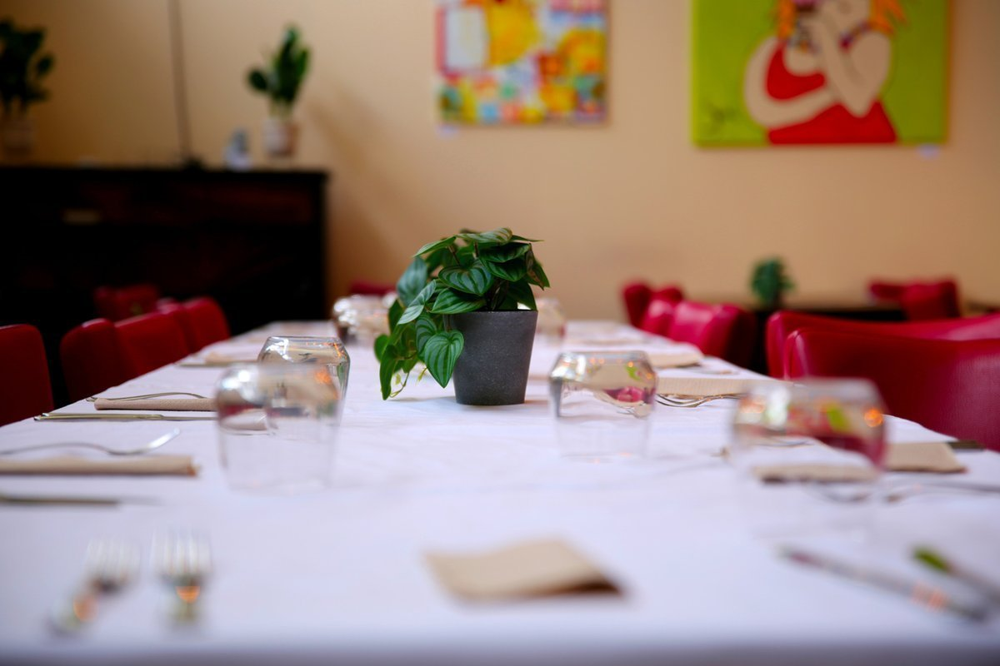

Keurmerken en certificeringen



Je komt binnen in onze centrale hal, te vinden in Perron 8, aan de Parallelweg 168 in Weert. De geur van versgebakken brood uit onze bakkerij komt je al tegemoet. Tegelijkertijd hoor je gereedschap in onze fiets- en metaalwerkplaats en zie en hoor je overal mensen werken, ontmoeten en overleggen.
Tussen die bedrijvigheid staan jongeren uit de regio die ergens anders zijn vastgelopen. School lukte niet meer of werk hield geen stand. Deze deelnemers krijgen bij ons een nieuwe kans. Binnen de zorgtrajecten van Kr8tig ontdekken zij hun talenten, werken ze aan hun persoonlijke ontwikkeling en leren op de verschillende afdelingen praktische vaardigheden. Zelfs didactische werkvormen kunnen aan hun zorgtraject gekoppeld worden. Dit stelt ze uiteindelijk in staat om toe te werken naar erkende certificering. Niet uit boeken, maar in de praktijk, op een plek waar ze er echt toe doen. Door deze zorgtrajecten op maat behoort uitstroom naar regulier onderwijs en de arbeidsmarkt ineens weer tot de mogelijkheden. En dat is waar Kr8tig voor staat, verder gaan waar andere stoppen, en weer toewerken aan een toekomstperspectief.
Als bezoeker ben je meer dan welkom om eens langs te komen. Met jouw bezoek draag je direct bij aan de groei, het zelfvertrouwen en de toekomst van onze deelnemers en profiteer je van producten en diensten voor een aantrekkelijke prijs.
Dagelijks werken deelnemers aan hun ontwikkeling in alles wat ze doen. In wat ze maken, hoe ze samenwerken en hoe ze stap voor stap zekerder worden. Begeleiders lopen mee, sturen bij en zorgen dat iedereen vooruit blijft gaan.
Bekijk afdelingenAchter elke stap zit begeleiding die mee kijkt. Die ziet waar iemand tegenaan loopt en helpt om daar doorheen te komen. Tot iemand het weer zelf kan, en zelfs daarna blijft die betrokkenheid.